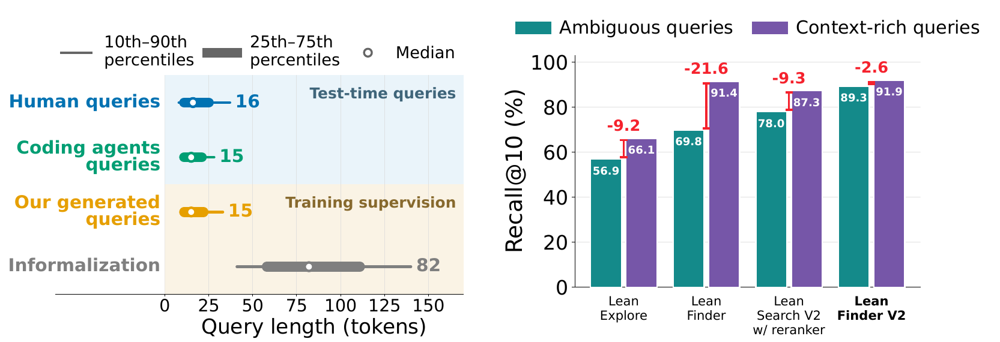

Mathlib 是 Lean 证明助手的数学库，里面收录了大量定理和定义，写证明的人和编码智能体都要先在里面搜到合适的定理。真实的搜索查询很短：人写的查询中位长度 16 个 token，智能体写的 15 个；而以往检索器训练用的定理自然语言复述，中位长度是 82 个 token。短查询会省略很多意图，同一句话可能对应好几条相近的定理。Lean Finder V2 从两头解决这个问题。模型一侧，作者用强化学习训练一个查询生成器，专门为每条定理写当前检索器排不准、但意思仍然对得上的短查询，用这些查询训练检索器，再用新检索器给生成器打分，交替两轮，共得到 60 多万对查询和定理。输入一侧，作者用 GEPA 自动优化一个改写提示词，在检索前把用户的短查询改写得更明确。在 810 条人写短查询组成的 MathlibQR 上，Lean Finder V2 的 Recall@10 是 0.893，此前最好的检索加重排系统是 0.780。消融实验里，只奖励“难”、不检查查询和定理是否一致时，排名最靠前的几项指标反而低于不用合成数据，因为生成器会学到写偏题的查询来制造难度。
1. 短查询为什么难搜

论文举了一个例子：目标是 Mathlib 里“常函数是偶函数”这条定理。用完整描述去搜（写明类型、函数形式和 f(−x)=f(x)），目标排第 1；换成同义的短查询“常函数在输入取负时不变”，目标掉到第 7，因为短查询没有点出 Mathlib 使用的“偶函数”这个概念。这类查询在实际使用中很常见，作者统计了 2 万条人写查询和 10 万条智能体查询，长度分布都集中在 15 个 token 左右。以往的检索器在定理的长复述上训练，学会的是逐条匹配详细描述，遇到短查询就分不清几条相近的候选。
2. 方法

2.1 初始检索器
检索器从 Qwen3-Embedding-8B 出发，用对比学习微调：每个查询和它对应的定理是正样本，同一批里的其他定理是负样本。Mathlib 里很多定理彼此相近，作者把余弦相似度比正样本还高出一个阈值 的候选从负样本里去掉，避免把其实也对的定理当成错的去惩罚。初始训练数据有两类，都是信息完整的长查询：一类是前人从 Lean 社区 Zulip 讨论里总结出的合成用户查询，一类是把定理翻成自然语言的长复述。这一步得到第 0 轮检索器。
2.2 用强化学习生成难查询
查询生成器是 Qwen3-4B，用 GRPO 训练（一种按同组采样结果的相对好坏更新策略的强化学习方法）。每条定理生成一个短查询，奖励是：
其中 是生成的查询， 是定理， 是当前检索器给目标定理的排名， 是查询长度。三项的作用分别是：
- 一致性 $j(q,d)$：由 GPT-OSS-120B 判断查询和定理说的是不是同一件事，不一致记 0，整条奖励归零。
- 难度 ：目标定理排进前 5 名，说明查询太容易，记 0。排在 5 到 30 名之间，奖励随排名按对数增长；排在 30 到 100 名之间记满分 1。掉出前 100 名记 0，因为这多半是查询写错了，而不是检索器的弱点。
- 长度惩罚：查询超过 40 个 token 开始扣分，到 50 个 token 扣满，扣分系数 。阈值依据是真实查询的长度分布：人写和智能体查询的 90 分位数是 37 和 28 个 token。
训练时还混入一部分监督微调，目标是反映人和智能体搜索习惯的真实风格查询，混合比例随训练逐步降低：训练初期先用监督信号把生成器的写法固定在真实查询附近，后期再主要按强化学习奖励更新。每轮生成器训练完，作者用它为 Mathlib 定理生成 30 多万条查询，和原有长复述数据一起重新训练检索器；新检索器再提供下一轮的排名奖励。一共交替两轮。
2.3 检索前改写查询
输入一侧用 GEPA 优化改写提示词。GEPA 是一种自动改提示词的方法：用候选提示词改写一小批查询，看固定的 Lean Finder V2 检索器把目标定理排到第几，根据排名和文字反馈修改提示词，只保留有改进的版本。改写和提示词优化都用 DeepSeek-V4.1-Flash 完成，优化用的查询来自 2.2 节生成的合成数据，不用测试集。
3. 实验
3.1 主结果：短查询上大幅领先，长查询上不退步
这组实验检验 Lean Finder V2 在短查询上是否超过已有系统，同时在长查询上不变差。短查询测试集是 MathlibQR，810 条人写短查询；长查询测试集是 2,526 条完整描述。作者保证测试集里的目标定理和相关查询没有在任何阶段进入训练。对比系统包括：LeanExplore（1.09 亿参数的检索器）；LeanSearch V2，同样基于 Qwen3-Embedding-8B，可外加一个 8B 重排模型；TheoremGraph；前作 Lean Finder（7B）；以及让 Claude Code（Sonnet 5）自己搜索文档。下表摘自论文 Table 1（MathlibQR）：
| 系统 | nDCG@1 | nDCG@10 | Recall@10 | Recall@100 |
|---|---|---|---|---|
| LeanExplore | 0.246 | 0.393 | 0.569 | 0.789 |
| LeanSearch V2 检索器 | 0.340 | 0.494 | 0.657 | 0.830 |
| LeanSearch V2 + 重排 | 0.470 | 0.623 | 0.780 | 0.858 |
| Claude Code（Sonnet 5） | 0.527 | 0.641 | 0.747 | – |
| TheoremGraph | 0.391 | 0.558 | 0.733 | – |
| Lean Finder | 0.370 | 0.533 | 0.698 | 0.875 |
| Lean Finder V2 第 0 轮 | 0.463 | 0.611 | 0.760 | 0.901 |
| Lean Finder V2 第 1 轮 | 0.520 | 0.682 | 0.842 | 0.951 |
| Lean Finder V2 | 0.558 | 0.732 | 0.893 | 0.973 |
Lean Finder V2 只用一个检索器，所有指标都高于带 8B 重排的 LeanSearch V2。两者的检索器起点相同，都是 Qwen3-Embedding-8B，所以差距主要来自训练数据。从第 0 轮到最终版本，nDCG@1 从 0.463 升到 0.558，这段提升完全来自对抗生成的短查询，因为第 0 轮只用了上面两类已有的长查询。Claude Code 的 nDCG@1 也有 0.527，作者认为原因是 Sonnet 5 熟悉 Mathlib 的命名习惯，还能反复搜索文档。
在长查询测试集上，Lean Finder V2 的 nDCG@10 是 0.749、Recall@10 是 0.919，前作 Lean Finder 是 0.742 和 0.914（论文 Table 2），加入大量短查询训练没有损害长查询检索。
3.2 真实无标注查询
这组实验检验在没有标准答案的真实查询上，Lean Finder V2 是否仍然更好。作者取 200 条真实的人写和智能体查询，把五个系统的检索结果打乱顺序、隐去系统名，让 GPT-5.6 Sol 和 Claude Opus 5 分别按有用程度给五个系统排名。两个裁判都把 Lean Finder V2 排在第一，它在三分之一以上的查询上拿到第 1 名，比次好的 LeanSearch V2 多出几到十个百分点。在 89% 的查询上，两个裁判选出的第 1 名是同一个系统，说明这个结论不是某一个裁判模型的偏好。
3.3 查询改写
这组实验检验检索前改写能否再提升。检索器固定为 Lean Finder V2，每种改写方法各生成三次。GEPA 优化后的提示词把 nDCG@1 从不改写的 0.558 提到 0.588（三次标准差 0.004）；同一提示词优化前的初始版本只有 0.532，比不改写还差；LeanSearch 和 LeanDex 两种已有改写方法分别是 0.475 和 0.520。Recall@100 本来已经是 0.973，所以改写的作用主要是把正确定理从候选里挪到最前面几名。再加上作者自训的 8B 重排模型，nDCG@1 到 0.610。
3.4 下游证明
这组实验检验检索变好能否帮到实际写证明。FATE-H 是 100 道较难的形式化代数题，让 Claude Code 在相同提示和预算下分别配不同的搜索工具，跑三次取平均通过率（只算能编译、且没有用 sorry 的证明；sorry 是 Lean 里的占位符，写上它可以跳过某一步证明照样编译，所以带 sorry 的证明不算完成）：不配搜索工具 34.0%，配 LeanExplore 27.3%，配 Lean Finder 30.7%，配 LeanSearch V2 36.0%，配 Lean Finder V2 39.3%。配较弱的搜索工具反而比不配更差，说明检索结果不准时会把智能体引向错误的定理。
3.5 消融：难度和一致性缺一不可
这组实验检验奖励的两部分是否都必要。做法是第一轮生成器只换奖励，其余设置不变（论文 Table 7，MathlibQR）：
- 只奖励难度：nDCG@1 0.453，低于第 0 轮的 0.463。
- 只奖励一致性：nDCG@1 0.463，和第 0 轮持平，Recall@10 从 0.760 升到 0.780。
- 两者都要：nDCG@1 0.520，Recall@10 0.842。
只奖励难度时，生成器可以靠写偏题的查询让排名变差，这类查询训练出来的检索器反而学到错误的对应。只奖励一致性时，查询对检索器来说太容易，提供的新信息有限。
第二轮的消融回答的是“是不是多采样就够了”。作者固定每条定理采样两条查询、优化步数也相同，只换第二轮生成查询的模型。用冻结的基础模型或用真实查询做监督微调的生成器，nDCG@1 都只有 0.47 左右；继续用第一轮的强化学习生成器、不再更新，能到 0.515；针对新检索器再训练一轮生成器，才到 0.558（论文 Table 9）。所以光多采样不够，生成器要跟着检索器的新弱点一起更新，第二轮才有明显收益。
4. 局限
论文没有单独的局限章节。可以补充两点。第一，MathlibQR 只有 810 条查询，真实查询评测依赖大模型裁判，两个裁判选出的第 1 名在 89% 的查询上相同，但没有人工复核的排名结果。第二，奖励里的一致性判断由 GPT-OSS-120B 完成，判断标准直接决定什么样的“难”被保留，论文没有报告这个判断的错误率，判断偏宽松时偏题查询仍会混进训练数据。
5. 实践意义
一是给专业领域训练检索器时，先统计真实查询的长度和写法，再按这个分布构造训练数据。本文的数据显示，同一个 8B 检索器只是把训练数据从长复述换成贴近真实长度的短查询，就超过了带重排的系统。
二是用强化学习合成难样本时，难度奖励必须配一致性检查，并设置排名上限，掉出前 100 名不给奖励。本文的消融直接说明，只追求难度会让合成数据变成噪声。